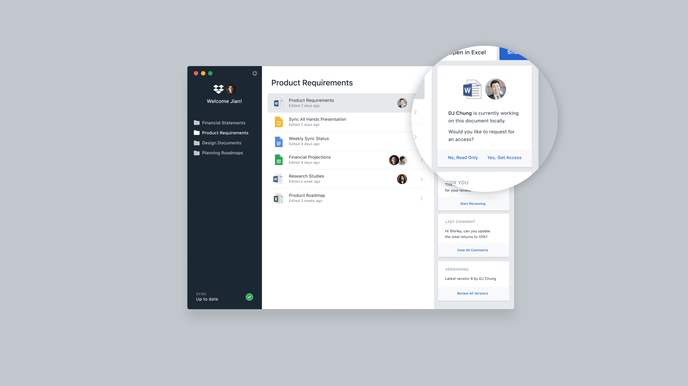
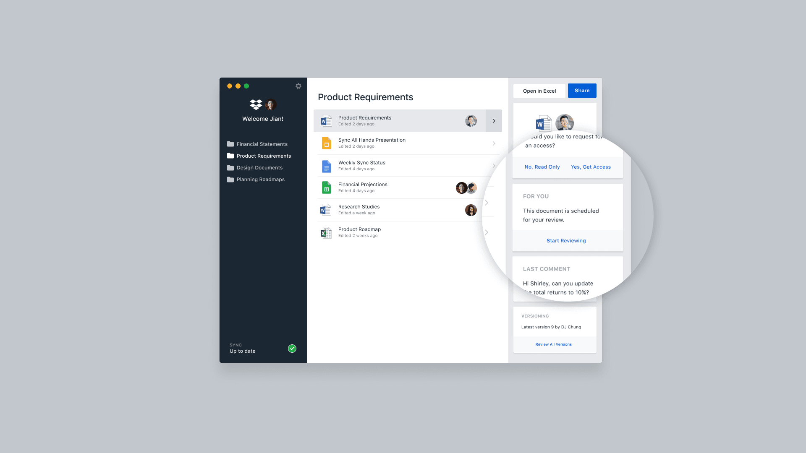
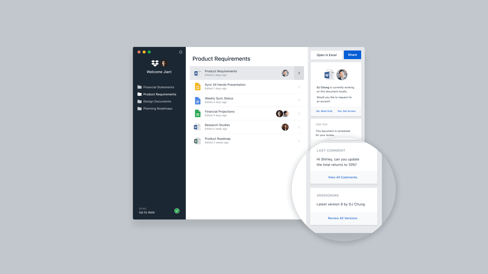
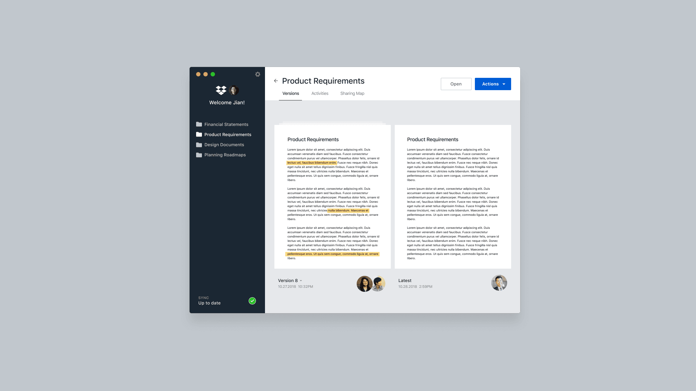
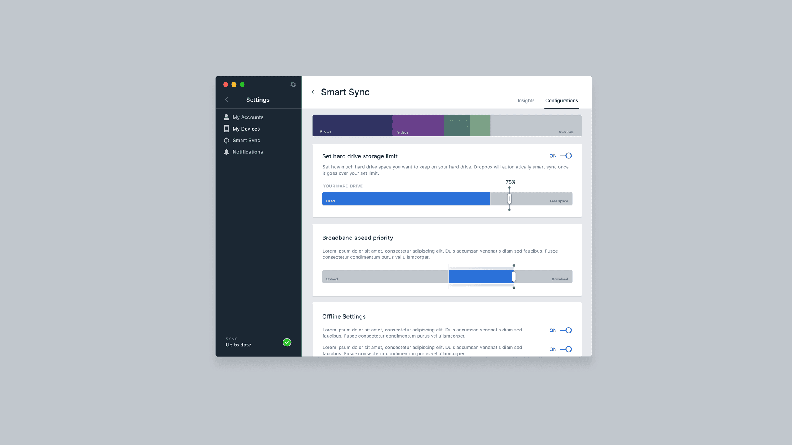
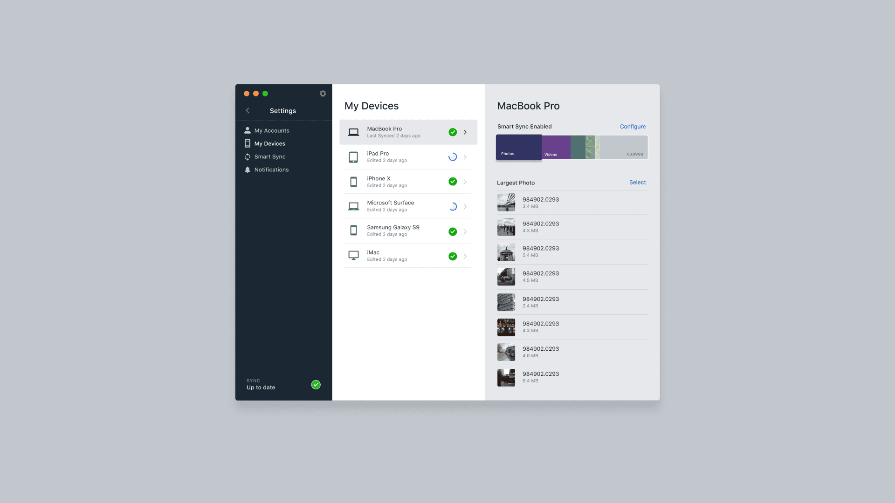
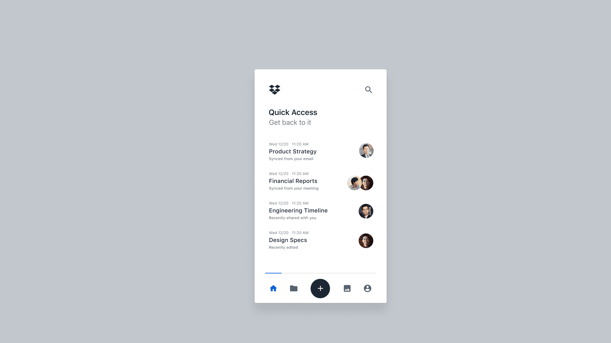
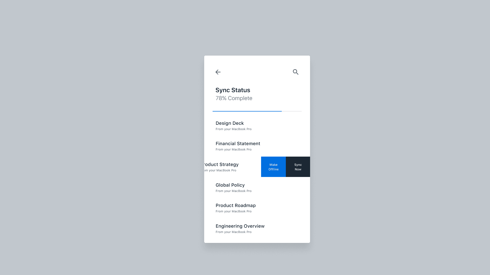
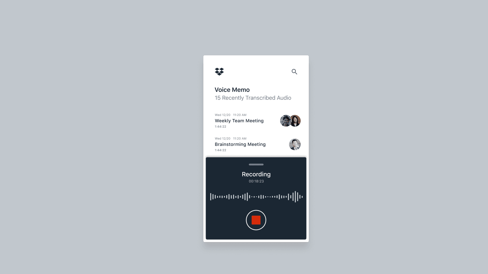

Dropbox Sync Experience
Dropbox is a leading cloud-based platform that empowers users to store, sync, and share files seamlessly across devices, making collaboration and productivity effortless. With a commitment to simplifying workflows, Dropbox provides a robust and reliable solution for both individuals and enterprises to manage their content securely and efficiently.
I led the design efforts for Dropbox’s core product, Sync, which drives $2.0 billion in annual revenue. I designed a sync experience that enables users to work without space constraints and intelligently surfaces files when needed, enhancing productivity and accessibility. Additionally, I established a design vision for future Dropbox products that leverages data intelligence from the Sync product, setting the stage for smarter, more intuitive user experiences across the platform.
Behind the Scenes








